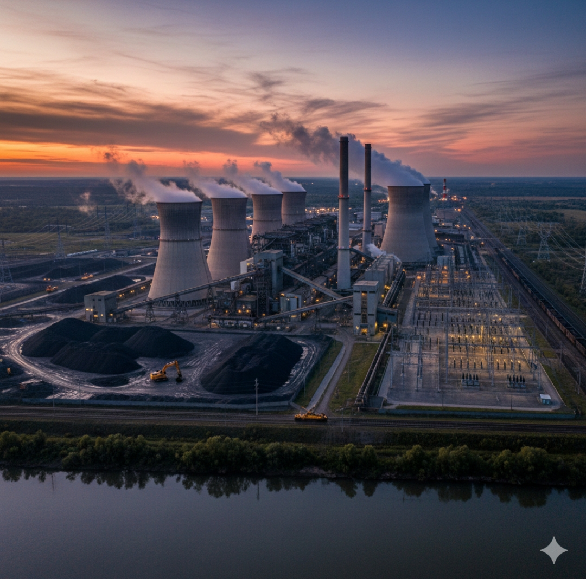
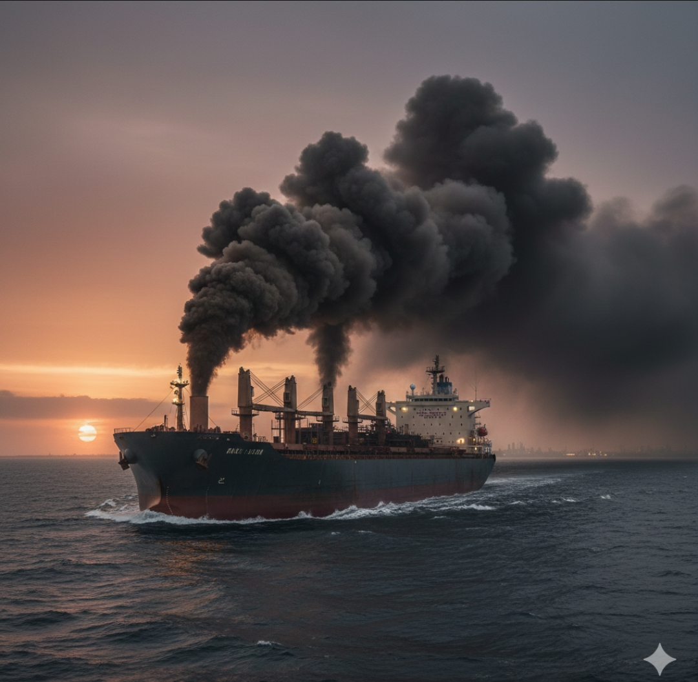
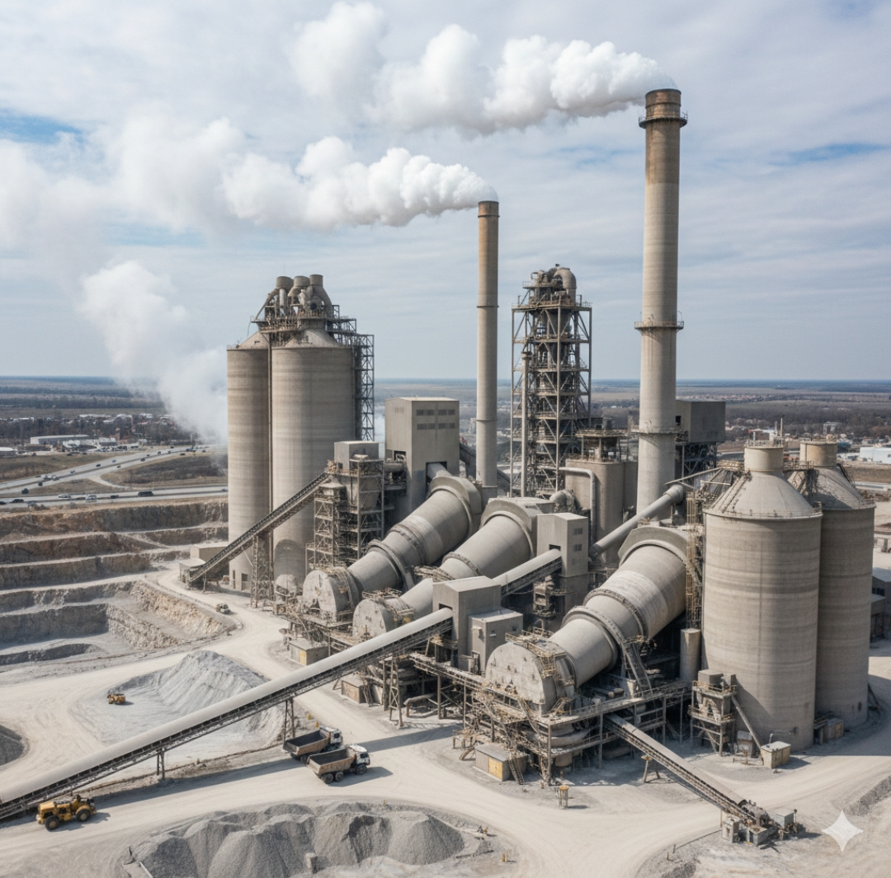
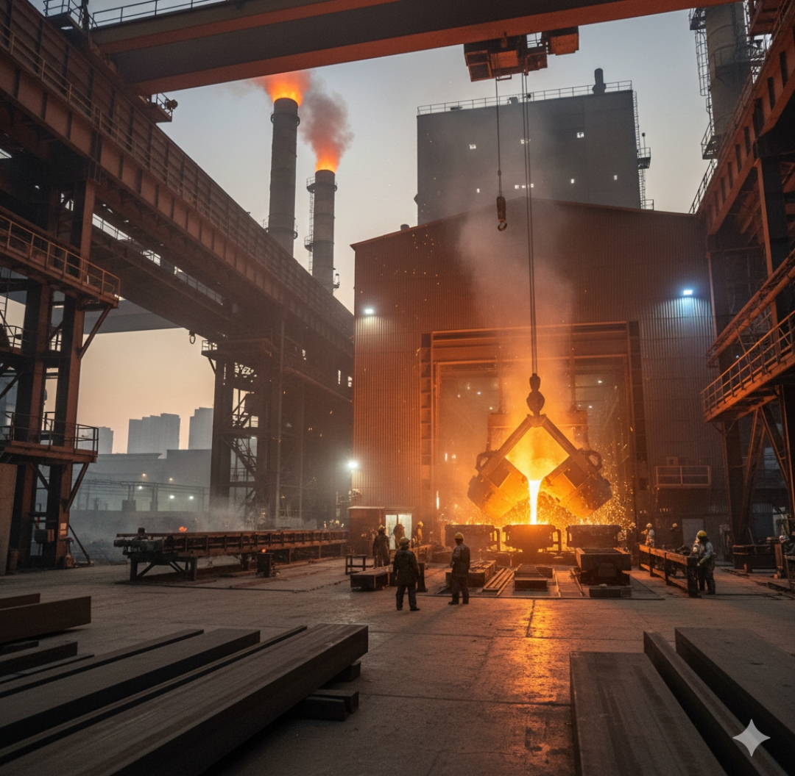
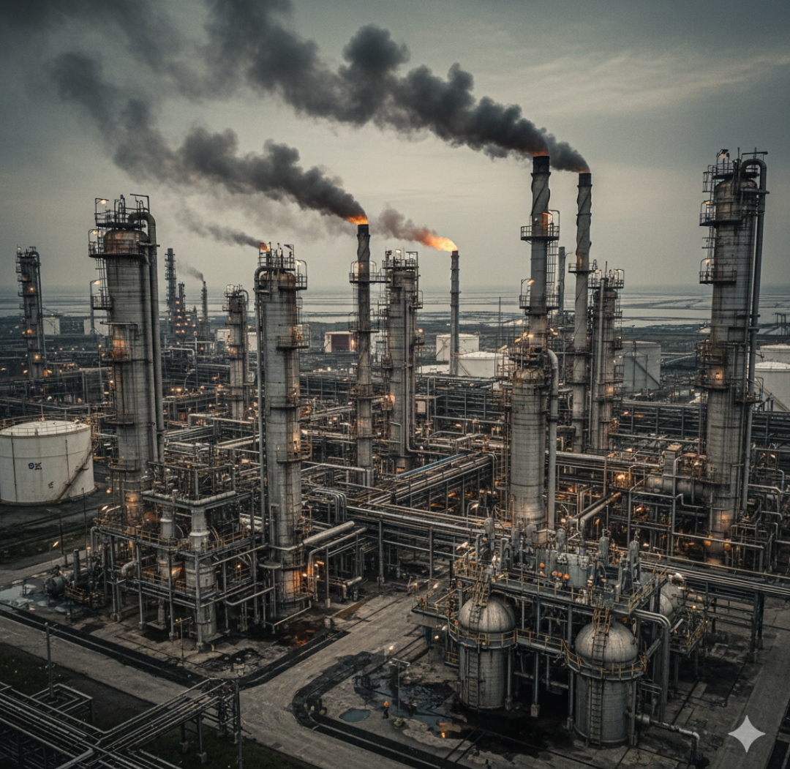
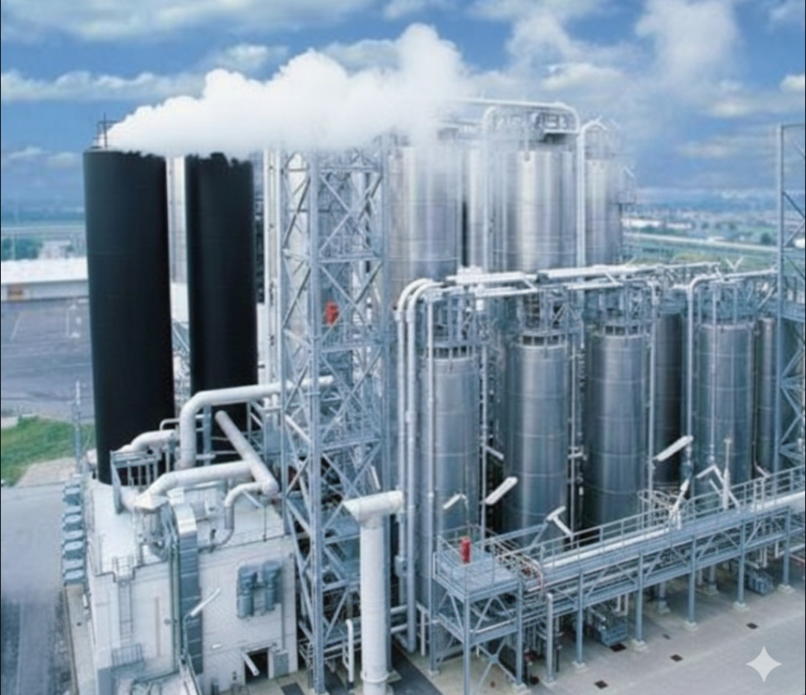

Carbon
is an extraordinary element that forms the foundation of life as we know it. Found in nearly every organic compound, it is both versatile and essential. Represented by the symbol C, it is combustible and found in substances like charcoal, lampblack, and coal.
In its pure crystalline form, carbon becomes diamond, renowned as the hardest substance on Earth. Another form, graphite, is soft and slippery, used in pencils and industrial applications. Carbon also forms essential compounds like carbon dioxide and carbon monoxide, and when combined with hydrogen, it also gives rise to hydrocarbons, the building blocks of fuels.
1. Carbon as a Fuel Source
Carbon has been used as a fuel source for thousands of years, and even today it remains at the heart of global energy consumption. Whether it appears as coal, oil, natural gas, wood, or charcoal, carbon-based fuels play a central role in heating, cooking, transport, and electricity. But the way carbon is released—and the scale of these emissions—varies dramatically depending on how the fuel is used. Understanding these differences shows why carbon fuels are still such powerful contributors to global emissions.
 Carbon as a Fuel: Energy Locked in Chemistry
Carbon-rich fuels release energy when burned because carbon atoms bond with oxygen, producing heat and forming carbon dioxide (CO₂).
This reaction is what powers a coal plant, boils water on a gas stove, or warms a home heated with firewood.
But the simplicity of this process is also its problem: any time carbon fuels burn completely, they create CO₂; when burned poorly, they also release carbon monoxide, methane, and soot.
Because carbon is so energy-dense and easy to transport, societies have built entire economies around it—making the shift away from carbon fuels incredibly difficult.
Cooking Fuels: Small Flames, Huge Global Impact
For billions of people, cooking is the most direct daily use of carbon fuels. Wood, charcoal, and coal are common in many low- and middle-income countries, while natural gas dominates in wealthier homes. Although a single cooking fire seems small, cooking-related emissions add up dramatically: household energy use accounts for hundreds of millions of tonnes of CO₂ every year, along with harmful smoke that affects human health.
Traditional biomass fuels like firewood release carbon when burned, but the impact depends on how they are harvested.
If forests regrow, some carbon may be re-absorbed; if deforestation occurs faster than regrowth, the emissions become part of the global carbon burden.
Charcoal and coal are more concentrated carbon sources, releasing higher amounts of CO₂ per unit of heat and often producing soot, which warms the atmosphere even further.
Carbon Release in Transport and Power Generation
When carbon fuels power cars, aircraft, ships, or power plants, the emission sources become even larger.
Petrol and diesel burn in engines, releasing CO₂ with every kilometre driven.
Jet fuel releases massive amounts of carbon at high altitudes, where its warming effect is amplified.
Coal-fired power stations are among the largest single point sources of CO₂ on Earth because coal contains a high proportion of carbon and is burned in enormous volumes to generate electricity.
Natural gas produces less CO₂ per unit of energy but remains a major emitter, especially when methane leaks
1. Road Transport - Our Biggest Contributor
Road transport (cars & trucks) remain by far the largest source of carbon emissions globally.
This stems largely due primarily due to two key processes:
Internal Combustion: When engines run on fossil fuels like gasoline or diesel combustion releases carbon dioxide into our atmosphere alongside particulate matter (PM2.5). PM2.5 – tiny particles that can be harmful—is an indicator of air quality concerns!
This contributes dramatically as greenhouse gases as well as an additional amount more carbon!
Vehicle Weight and Design: A larger vehicle weight can have an added effect on an engine’s efficiency as well as an added amount carbon emissions.
 2. Sea Transport - A Growing Challenge
Sea transport (shipping) isn't without its challenges but contributes significantly:
Ships & Cargo: Ships burn fuel (typically heavy fuel oil) which releases CO2 and other pollutants into the water.
While they’re sometimes touted as environmentally friendly alternatives (although they do use an immense amount more fuel than planes), they’re an enormous source.
Oil Spills: Oil spills can drastically reduce air quality and increase carbon emissions by adding carbon into our environment!
3. Air Transport - Short-haul Impacts
Short-haul flights: Short-haul flights contribute relatively little carbon compared with other modes but their carbon footprint can be mitigated by carbon offsetting programs and other solutions!
Why Carbon Fuels Contribute So Much to Global Emissions
The dominance of carbon as a fuel comes down to availability, affordability, and energy density. Fossil fuels are abundant, easy to store, and capable of producing intense heat—qualities that alternatives still struggle to match in some sectors. As global populations and economies grow, the demand for energy grows with them, ensuring that carbon fuels continue to dominate in many regions. Because every stage—mining, transporting, refining, and burning—releases greenhouse gases, the cumulative effect is enormous.
Different uses of carbon fuel release CO₂ in different ways: from the quiet burn of a cooking stove to the roar of a jet engine or the vast furnaces of a power station. These sources vary in size, but together they create a global network of continuous carbon release. Much of the challenge comes not from any single use, but from the millions of small daily actions combined with the massive industrial applications that power modern life.
Industrial carbon emissions
Industrial carbon emissions come from a range of processes that release CO₂ and other greenhouse gases as by-products of making the materials and fuels we use every day.
These emissions are often harder to eliminate than those from electricity or transport because they come not only from burning energy, but also from the fundamental chemistry of industrial production.
Below is an engaging, easy-to-read breakdown of the major industrial sources and why they matter so much globally.
 Cement Production: A Chemical Giant of Emissions
Cement is the world’s most widely used construction material—and also one of the largest industrial emitters of CO₂.
The main culprit isn’t the energy used to heat kilns (although that matters too); it’s the chemical process itself.
When limestone (calcium carbonate) is heated to make clinker, it releases CO₂ as a natural result of the reaction.
This “process emission” means that even a fully renewable-energy-powered cement plant would still emit carbon unless the chemistry is changed.
Because cement is used everywhere—from skyscrapers to sidewalks—it contributes roughly 7–8% of global CO₂ emissions, making it one of the hardest sectors to decarbonize.
 Steelmaking: Turning Iron Into Emissions
Steel production is another heavyweight emitter.
Traditional steelmaking relies on blast furnaces, which use coal (in the form of coke) both as fuel and as a chemical reducing agent to remove oxygen from iron ore. This reaction necessarily produces CO₂.
As global demand for steel stays high—especially in construction, vehicles, and manufacturing—the industry represents about 7% of global emissions.
Efforts like hydrogen-based steelmaking or electric arc furnaces using recycled scrap offer hope, but scaling them is a long-term challenge.
 Oil, Gas, and Petrochemicals: Emissions from Energy Itself
The petrochemical sector produces plastics, fertilizers, solvents, and thousands of everyday products.
Emissions arise from two main sources:
1. Combustion of fossil fuels to provide the high temperatures required for cracking and reforming hydrocarbons.
2. Release of CO₂ and methane during refining, chemical reactions, and gas flaring.
Combined, these processes account for a significant slice of industrial emissions—roughly 2–3 gigatonnes of CO₂ per year—powered largely by society’s insatiable demand for plastics and chemical products.
Mining and Metal Processing: Energy-Hungry Foundations
Non-ferrous metals like aluminum, copper, and zinc also carry large carbon footprints.
Aluminum smelting, for example, requires enormous amounts of electricity to separate aluminum from its oxide.
If that electricity comes from fossil fuels, the emissions can be enormous.
Mining itself also uses heavy machinery powered by diesel and often relies on carbon-heavy supply chains.
As global tech, energy storage, and electrification needs grow, so does the demand for these metals and their associated emissions.
Pulp, Paper, and Other Industries: Smaller Sources, Big Impact
Industries such as pulp and paper, ceramics, glass, bricks, and food processing contribute smaller shares individually, but together they form an essential part of industrial emissions.
These sectors typically rely on large furnaces, boilers, and treatment systems that run on fossil fuels.
Their collective emissions are significant and rising as global consumption increases.
 Plastic production
At its core, plastic production involves transforming raw materials into pellets used as building blocks for various plastic products – bottles and containers for beverages and food , car parts and components , textiles and packaging materials and more!
Essentially, plastic production creates an entire industry centered around manipulating materials – primarily water and carbon – into highly versatile shapes and properties.
There isn't one single “plastic” – there are thousands of types! Each kind requires distinct processes and focuses on various aspects like viscosity and stability and durability..
Key Starting Materials:
Polyethylene (PE): Perhaps *one* most readily available plastic product polystylene comes primarily from oil refining as an intermediate for producing ethylene.
Ethylene gets created by refining crude oil and can be then polymerized into various forms like Low-Density Polyethylene (LDPE).
This creates an enormous amount of PE and uses an immense amount water and heat.
Polypropylene (PP):This plastic requires using catalysts at high temperatures and very precise processes involving crude oil and various refinery byproducts.
In effect this creates an incredible amount, used by bottles and containers and automotive parts and textiles.
Polystyrene (PS): This versatile plastic comes from polystyrene – often derived from petroleum and requires an oxidation process alongside high heat temperatures.
Its versatility can be seen by its use in cups and bowls and various packaging materials.
Other Polymers:Beyond these primary polymers lie other materials like polyvinyl acetate (VA), polyester and various other materials tailored for specific applications – some used by medical and automotive industries.
Why Industrial Emissions Are So Hard to Cut
What makes industrial CO₂ so challenging isn’t just energy use—it’s physics and chemistry.
Many processes produce CO₂ as an unavoidable by-product, meaning that switching to clean energy isn’t enough.
Add to that the need for extreme heat (often over 1,000°C), the long lifetime of industrial equipment, and global demand for materials that keeps growing, and you have a sector that is both essential and deeply carbon-intensive.
Natural sources of carbon dioxide
. Respiration
All animals, humans, and microbes releaseCO₂ by breathing.
This is the process of cellular respiration, where organisms break down glucose (sugar) to produce energy ATP. Oxygen is used in this reaction, and carbon dioxide is released as a waste product.
2. Decomposition / Soil Respiration
Microbes breaking down dead plants and animals release CO₂ .
Microscopic organisms (bacteria and fungi) consume dead organic matter. As they respire (breathe) to gain energy from this decaying material, they release the stored carbon back into the atmosphere as CO₂ .
3. Volcanic Eruptions
Volcanoes release CO₂ from magma.
Gases, including CO₂ , are dissolved in the molten rock (magma) deep beneath the Earth's surface. As the magma rises and erupts, the pressure decreases, causing the dissolvedCO₂ to escape and vent into the atmosphere.
4. Ocean Release
Oceans store CO₂ and release it naturally depending on temperature and circulation.
CO₂ is dissolved in surface ocean waters. When cold, deep water (rich in stored CO₂ ) rises to the surface (upwelling) in warmer regions, it heats up. Since warmer water holds less dissolved gas, the CO₂ is naturally forced out, or outgassed, back into the atmosphere.
5. Forest Fires / Wildfires
Natural wildfires release CO₂ stored in trees and plants.
Plants and trees store atmospheric carbon through photosynthesis. When this biomass burns rapidly, the stored carbon immediately reacts with oxygen in the air, releasing it as CO₂ (and other gases) in a short, intense pulse.
1. Estimated Amount of Carbon Produced by Humans
GlobalCO₂ emissions from fossil fuels (2023 estimate): 36–37 billion tonnes CO₂ per year ( 10 billion tonnes of carbon).
Burning coal, oil, and natural gas for energy releases carbon that has been trapped underground for millions of years. This rapid addition of ancient carbon is the largest human contribution. The difference between CO₂ mass and pure carbon mass is due to the mass of the two oxygen atoms .
Land-use change (deforestation, agriculture): 4–5 billion tonnes CO₂ per year.
Deforestation (especially burning forests) removes large carbon storage areas and releases the storedCO₂ . Agricultural practices (like tilling soil) expose soil carbon, allowing microbes to break it down and release CO₂ .
Total anthropogenic CO₂ emissions: 40 billion tonnes CO₂ per year.
This is the total combined amount of human-causedCO₂ being added to the atmosphere annually from all sources. This figure is large enough to overwhelm the natural carbon cycle's ability to absorb it, leading to the observed increase in atmosphericCO₂ concentration.
2. Natural Carbon Recycling (Carbon Sinks)
Oceans: Absorb ~25–30% of human-emitted CO₂ (~10 billion tonnes CO₂/year).
Forests and soils: Absorb another ~25–30% (~10 billion tonnes CO₂/year).
Atmosphere: The rest (~40–50%) remains in the air, increasing global atmospheric CO₂ concentration.
Summary: Only about 50–60% of human CO₂ emissions are “recycled” naturally each year; the rest accumulates, causing global warming.
3. Effectiveness of Carbon-Fighting Efforts (Mitigation)
Renewable energy adoption, energy efficiency, and reforestation: Could reduce global emissions by 20–30% by 2030 under aggressive policies.
Carbon capture and storage (CCS): Currently captures 1% of global emissions, but could increase in future.
Global climate targets: To limit warming to 1.5°C, emissions need to decline ~50% by 2030 and reach net-zero by 2050.
But this would be really hard work
Percentage of CO₂ “fought” today: Roughly half of human emissions are absorbed naturally, but human mitigation efforts currently reduce only a small fraction of approximately 10 to 15%.
CO₂ remaining in atmosphere is ~40–50%
Kofi and the Sneaky Carbon
Once upon a time, there was a boy named Kofi. Not the drink, the boy. But funnily enough, he loved drinking water from plastic bottles almost as much as coffee lovers love… coffee. One hot day, Kofi grabbed a shiny plastic bottle of water. “Ahh… refreshing!” he said. But little did he know, that bottle had a secret life of carbon mischief. First, the bottle was made from oil, deep underground. Machines dug it up, making lots of smoke and sneaky CO₂ clouds. “Hey, I’m coming to the air!” shouted the CO₂. Then, the oil went to a factory where it turned into plastic. The machines hummed, lights blinked, and more CO₂ sneaked out. “I’m multiplying!” giggled the carbon. Next, the bottle hopped onto a truck for a road trip. Vroom vroom! Diesel engines puffed, adding more CO₂ to the party. “Hey Kofi, don’t drink me yet, we’re just getting started!” the carbon laughed. Finally, Kofi twisted the cap and took a big sip. “Ahh… delicious!” he said, completely unaware that invisible carbon clouds were waving at him. After finishing the water, Kofi tossed the empty bottle in the trash. The bottle either got burnt or thrown to the fields, releasing even more CO₂. The sneaky carbon cheered: “Mission accomplished!” Kofi scratched his head. “Wow… all that for one bottle?” The carbon clouds giggled. “Yep! But if you use a reusable bottle next time, we’ll have to find a new job!” And from that day on, Kofi remembered: even tiny actions can leave a big carbon footprint… but reusable bottles are the superhero way to fight it!